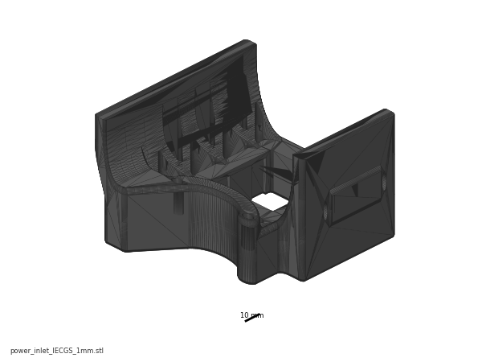
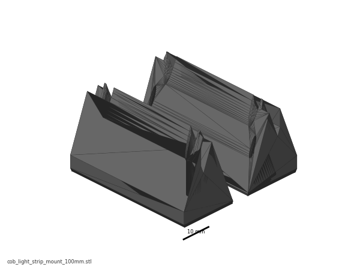
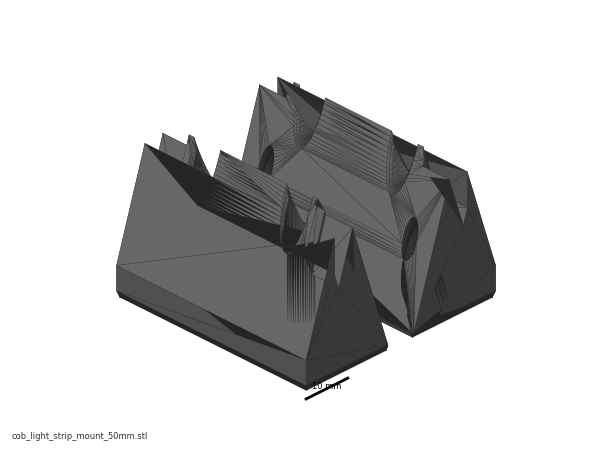
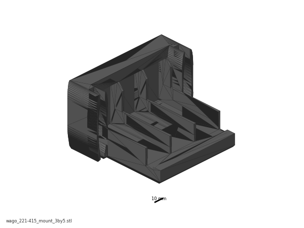
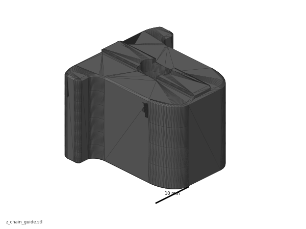
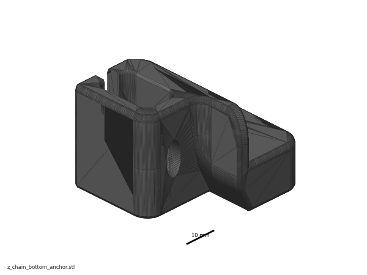
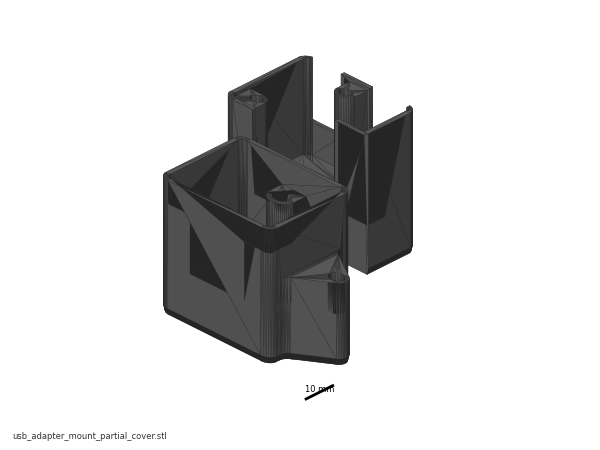

Before you start Chapter 10¶
Before you start · Chapter 10 — Wiring and Checkpoint #1
Builds every harness — mains, 24 V, motion, sensors, lighting, toolhead umbilical — and ends at the gate that must pass before the machine is ever plugged in.
What you're building in this chapter. Four systems, in this order. The mains side — the C14 inlet with its integrated switch and fuse, a three-block WAGO bus for Live, Neutral and earth, the 24 V PSU, and the solid-state relay that lets firmware switch a mains bed heater — goes in first and is then proved with a meter before anything is plugged in. The 24 V side fans out from the PSU to the Leviathan mainboard, to its separate high-voltage stepper supply, and to the USB adapter PCB that feeds the toolhead. The signal side is everything the machine senses and lights with: six motor cables on their mapped driver sockets, the XY endstop pod on the gantry, the mechanical nozzle probe that sets Z=0, the bed thermistor, two COB light strips and their junction PCB, the bay and filter fans, and the Pi's screen, network and USB links. Finally the three drag chains — X, Y and Z — are mounted and filled, so every cable can follow the moving gantry for years without fatiguing. The chapter ends unplugged, open and metered, with LDO's Checkpoint #1 behind you.
Time: 5.0–7.0 h hands-on, first build (survey §5.1, §7.2).
Sessions: 14 × ~30 min (Pause segments below; every minute figure in this chapter is a first-build estimate derived from the Time range and the step count).
Prerequisites:
- Ch 03 — Build plate. Plate bolted down; heater, thermistor and PE leads hanging loose below deck.
- Ch 06 — Z axis. Gantry in, Z belts on. The gantry must move by hand over its full Z travel — that is what sets the chain slack.
- Ch 07 — A/B belts. Probe wires already dressed along the X extrusion (manual p.143).
- Ch 08 — Toolhead. Stealthburner + CW2 + Nitehawk-SB V2 assembled, all toolhead-side connectors seated, USB-adapter PCB stack built.
- Ch 09 — Electronics bay. DIN rails, wire ducts, Leviathan on its brackets, Raspberry Pi mounted on its standoffs with the HAT power adapter, nozzle-probe PCB assembled and mounted, bed WAGO mount fitted, SSR on its DIN bracket, USB-adapter PCB on its DIN clip — and the inlet panel with its IEC module fitted and mounted on the rear extrusion (Steps 09.10–09.12), plus the mains WAGO block built and mounted (Step 09.13). Nothing in this chapter builds those; 10.4–10.7 only confirm and label them.
- Print batches: B05 (Z joints + Z chain), B07 (electronics bay + lighting — the eight COB mounts and the 3×5 WAGO mount), which also carries
power_inlet_IECGS_1mmon plate B07-P1 (moved out of B08 — index correction #11). One B08 part is needed early:mount.stl(plate B08-P3) plus the B02[a]_faceplate, at Step 10.50 — the touchscreen module has to exist before its ribbon is latched, so Ch 11 Steps 11.5–11.6 are done from there. Both are pre-kit prints. Nothing else from B08 is needed before Ch 11.
Tools
- Multimeter — mandatory. Continuity/beeper, a resistance range to at least 2 MΩ (a 20 MΩ range is preferred — it turns an
OLpass into a number you can write down), and a DC volts range. No multimeter, no power-on. - 2.5 mm flat-blade screwdriver (supplied) — WAGO levers, plug-type terminals, drag-chain latches
- PH2 Phillips — PSU terminal block and SSR terminals
- Hex 2 / 2.5 / 3 / 4 mm
- Flush cutters, small long-nose pliers, tweezers (endstop repin)
- Soldering iron + brass M3 insert tip — all twenty inserts in one pass at step 10.35 (COB mounts ×16, Z chain guide ×2, Z chain retainer bracket ×2), so the iron is out once and never during an electrical segment
- Label maker, or the cable tags supplied in the kit
Consumables: zip ties (of the 100 supplied, this chapter eats 30–40), VE0508 ferrules ×5 (spares), IPA and a lint-free cloth for the extrusion slots before the covers go on.
Printed parts
Parts arrive in the bins named below (see the bin map in print/README.md#bins); check the bin label's list before you start.
| Looks like | STL | Bin | Qty | Colour |
|---|---|---|---|---|
 |
power_inlet_IECGS_1mm.stl (Voron-2 STLs/Skirts/) |
09-bay | 1 | Black — heat-set, fitted with its IEC module and mounted in Ch 09 (09.10–09.12); nothing to build here |
 |
cob_light_strip_mount_100mm.stl (LDOVoron2 STLs/COB Light Strip/) |
10-lights | 6 | Black |
 |
cob_light_strip_mount_50mm.stl (LDOVoron2 STLs/COB Light Strip/) |
10-lights | 2 | Black |
 |
wago_221-415_mount_3by5.stl (Voron-2 STLs/Electronics_Bay/) |
09-bay | 1 | Black — fitted in Ch 09, populated here |
  |
z_chain_guide / z_chain_bottom_anchor (batch B05) |
10-chains | 1 / 1 | Black |
 |
[a]_z_chain_retainer_bracket_x2 (batch B02, plate B02-P3) |
10-chains | 2 printed, 1 fitted, 1 spare (verify on bench) | Orange |
2x3 Splitter Spacer |
— | 2 | LDO-supplied printed — do not print | |
 |
usb_adapter_mount_partial_cover.stl (Nitehawk-SB-V2 repo) |
09-bay | 1 | Black — fitted in Ch 08/09, used here |
{kind=link}
{kind=link}
{kind=link}
{kind=link}
{kind=link}
{kind=link}
{kind=link}
Hardware (chapter totals)
| Fastener / part | Qty | Note |
|---|---|---|
| AC inlet, integrated switch + fuse | 1 | pre-wired; verify, don't rewire |
| Meanwell LRS-200-24 PSU | 1 | 24 V 8.8 A; 115/230 V selector on the side |
| Omron SSR G3NB-210B-1 + DIN bracket | 1 | 24–220 VAC 10 A |
| WAGO 221-415 (5-way) | 3 | N / L / PE bus |
| WAGO 221-412 (2-way) | 2 | bed L and bed N breakout, on the bed WAGO mount |
| 3×2 XH splicer PCB | 2 | one for the 6020 fan pair, one as the LED junction |
| 2×2 XH splicer PCB | 1 | bed thermistor breakout (fitted Ch 09) |
| Drag chain 10×10 R18 | 2 | X chain and Y chain |
| Drag chain 10×15 R28 | 1 | Z chain |
| M3×5×4 brass heat-set insert | 20 | 16 for the COB mounts, 2 for the Z chain guide, 2 for the Z chain retainer bracket (p.204 carries the heat-set icon but no count — count the bosses on your part, verify on bench) |
| M3×6 FHCS | 16 | COB mount halves |
| M3×8 SHCS | 20 | 16 COB mounts to extrusion, 2 per splicer PCB ×2 |
| M3 hammerhead T-nut, 2020 | 20 | pairs with the M3×8 SHCS above |
| M3×6 FHCS (chain ends, X and Y) | (verify on bench) | manual p.197, p.199 — 2-hole chain ends |
| M3 roll-in T-nut, 2020 | 2 | X and Y chain ends |
| M3×10 FHCS | 4 | Z chain top and bottom ends (p.202) |
| M3×12 SHCS | 2 | Z chain retainer bracket to the A drive (p.204) |
| M5×10 BHCS + M5 roll-in T-nut | 2 + 2 | Z chain guide (p.201), Z chain bottom anchor (p.203) |
| M5×10 BHCS + M5 roll-in T-nut (frame PE) | 1 + 1 | plus the two M5 locking washers below |
| M5 locking washer | 2 | frame PE stack |
| Extrusion slot cover, 6 mm | up to 9 | closes the slots the LED leads run in |
| VE0508 ferrule | 5 | spares |
| Zip ties 3×150 mm | ~35 | from the 100 supplied |
Read first
- Mains is the one step in this build that can kill you. Nothing gets plugged in until Checkpoint #1 passes with a meter. If your local regulations forbid you from wiring the mains side, stop at step 10.8 — the first mains run — and get Section 1 done by someone certified. src
- Set the PSU's 115/230 V selector before anything else and check it again at Checkpoint #1. Getting it wrong destroys the PSU on the first switch-on. src
- Keep every wire loose inside every drag chain. Taut wires fatigue and break — the single most-repeated LDO warning, and the umbilical is the cable it kills. src
- Close nothing until Checkpoint #1 passes. No duct covers, no skirts, no bottom panel. Re-opening a closed bay costs an hour and tempts you to skip the meter (survey §5.2 W8).
- Never plug or unplug a stepper, or the Micro-Fit umbilical connector, with power on. Back-EMF kills drivers; hot-plugging the umbilical can take out the Nitehawk or the Pi. src
- Your Rev D+ toolboard is a Nitehawk-SB V2. The Klipper config and the USB serial-ID pattern both differ from the Rev D wiring guide — that is Ch 12's problem, but do not let anyone talk you into loading
leviathan-printer-rev-d.cfgon this board (survey §4.1 ①②).
Sources for this chapter:
- Voron 2.4r2 Assembly Manual, pinned commit
de7e89d— p.143, p.156, p.181, p.194–195, p.197–204 - LDO wiring guide, Rev D — every connector step below cites its own section anchor
- LDO Build Notes (build FAQ) — the per-page SKIP notes for p.152, p.162–163, p.169, p.172, p.190, p.194–198
- LDO Rev D printed-parts guide and Rev D 350 BOM
- LDO Leviathan V1.3 guide — board silkscreen, jumper block, port map
- Nitehawk-SB V2 board doc and the Nitehawk-SB-V2 repo at commit
42ae497(pinout, grounding and cable-chain images) - LDO XY endstop reconnecting guide and BTT 4.3" screen rotate guide
leviathan-printer-rev-d-sbv2.cfgat commit667521d— the pin assignments this chapter wires to- Klipper
temperature_sensors.cfgat commitf0892d8— the thermistor curve in step 10.76 - Step images mirrored into
assets/remote/10-wiring/— LDOVoron2 at8270e8c, the Nitehawk-SB-V2 images at42ae497, and six diagrams from the LDO wiki. All are LDO Motors' work, mirrored with attribution for this non-commercial manual; owner, source URL, date and sha256 for each are in that folder'sSOURCES.txt
Video coverage (Steve Builds, pre-release LDO kit — differs from Rev D+): Part 4 @1:43:50 (+13m), Part 6 @0:24:08 (+2m), Part 6 @0:25:44 (+22m), Part 6 @1:04:10 (+27m), Part 7 @0:08:36 (+16m), Part 7 @1:29:40 (+12m), Part 8 @0:53:06 (+37m), Part 8 @1:25:00 (+10m), Part 8 @1:34:41 (+3m), Part 8 @1:37:22 (+7m), Part 8 @1:43:45 (+11m), Part 9 @0:04:57 (+15m), Part 9 @0:45:19 (+3m), Part 9 @0:47:56 (+8m), More Extras! @0:43:01 (+4m), More Extras! @1:59:20 (+23m), More Extras! @2:18:10 (+53m)
Manual pages this chapter replaces. The official manual's Wiring chapter describes a BTT Octopus machine with a 5 V PSU. Per LDO's build notes, skip p.182–183, 186–193, 196 and 205–209 entirely and follow the LDO wiring guide instead. Only p.181 (PSU voltage check), p.194–195 (cable-chain overview) and p.197–204 (chain mounting) survive, and they appear below as steps. src